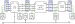

A worked network example
The Notation page defines the sets, topology, connectivity, and terminal-map machinery abstractly. This page makes them concrete by constructing every set from one small network — the fastest way to internalise how a case is assembled.

The network has four buses $\{\texttt{A},\texttt{B},\texttt{C},\texttt{D}\}$ joined by a line, a transformer, and a switch, feeding single- and three-phase loads, a single-phase generator, a neutral-grounding shunt, and a voltage source, with a mix of grounded and ungrounded terminals. The circled numbers on the figure are element IDs.
Element sets
The branch and nodal elements (see the classification into branch vs nodal):
\[\begin{aligned} \mathcal{B} &= \{\texttt{A},\texttt{B},\texttt{C},\texttt{D}\}, & \mathcal{L} &= \{2\}, & \mathcal{W} &= \{9\}, & \mathcal{X} &= \{6\}, \\ \mathcal{D} &= \{1,5,7\}, & \mathcal{G} &= \{3\}, & \mathcal{H} &= \{4\}, & \mathcal{S} &= \{8\}. \end{aligned}\]
Topology (branches → buses)
The forward topology orients each branch from its from bus to its to bus:
\[\mathcal{T}^{L\rightarrow} = \{2\,\texttt{A}\,\texttt{B}\},\quad \mathcal{T}^{X\rightarrow} = \{6\,\texttt{C}\,\texttt{B}\},\quad \mathcal{T}^{W\rightarrow} = \{9\,\texttt{C}\,\texttt{D}\}.\]
The combined line topology adds the reverse orientation, $\mathcal{T}^{L} = \{2\,\texttt{A}\,\texttt{B},\ 2\,\texttt{B}\,\texttt{A}\}$, and likewise for the transformer and switch.
Connectivity (nodal elements → buses)
\[\mathcal{C}^{D} = \{1\,\texttt{A},\ 5\,\texttt{B},\ 7\,\texttt{D}\},\quad \mathcal{C}^{G} = \{3\,\texttt{B}\},\quad \mathcal{C}^{H} = \{4\,\texttt{B}\},\quad \mathcal{C}^{S} = \{8\,\texttt{C}\}.\]
The single voltage source fixes $|\mathcal{I}^{\text{source}}|=1$ (bus C is the reference).
Terminal maps
Each element lists which bus terminals its conductors connect to, in order. As stored in the data model (terminal_map, or terminal_map_from/_to for branches):
| Element | Map | Notes |
|---|---|---|
| Load 1 (bus A) | ["a","b","c","n"] | three-phase wye |
| Load 5 (bus B) | ["c","a"] | single-phase, across c–a |
| Load 7 (bus D) | ["a","b","c"] | delta |
| Generator 3 (bus B) | ["a","n"] | single-phase |
| Shunt 4 (bus B) | ["n"] | neutral grounding |
| Source 8 (bus C) | ["a","b","c"] | |
| Line 2 | from ["a","b","c","n"], to ["a","b","c","n"] | four-wire |
| Transformer 6 | from ["a","b","c","n"] (C, wye), to ["a","b","c"] (B, delta) | ΔY |
| Switch 9 | from ["a","b","c"], to ["a","b","c"] |
Configurations
The nodal-element connection configurations:
\[\mathcal{R}^{D} = \{1\!:\!\text{WYE},\ 5\!:\!\text{SINGLE\_PHASE},\ 7\!:\!\text{DELTA}\},\qquad \mathcal{R}^{G} = \{3\!:\!\text{SINGLE\_PHASE}\}.\]
Grounding
Buses declare which terminals are perfectly grounded. In this network the source bus neutral and any explicitly-earthed terminals are pinned to $0\text{ V}$ (bus property), while the shunt at bus B grounds the neutral through an impedance. See Grounding for the full model; the line and shunt additionally carry the implicit ground connection of their shunt admittances.
From these sets, the component pages instantiate the variables and constraints: a voltage vector per bus terminal, series currents on the line and transformer windings, load/generator/source currents, and one KCL equation per terminal tying them together.